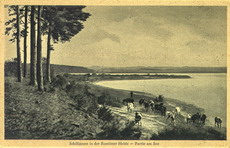
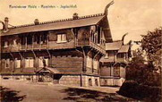
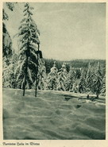
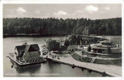
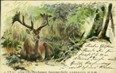
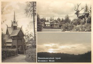
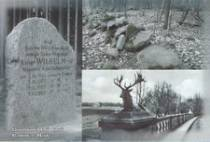
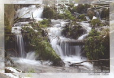

ПРИВЕТ ИЗ РОМИНТЕН
Gruss aus Rominten
Gruss aus Rominten
Выставка, посвящённая старой и новой открытке о Роминтской пуще - Виштынецком крае.
В Калининграде в Немецко-Русском доме с 15 августа по 4 сентября 2006 года Виштынецкий экомузей представил выставку «Привет из Роминтен - Gruss aus Rominten», посвященную старой и новой открытке о Роминтской пуще.


Открытка всегда была посланницей. Вместе с открыткой люди передавали через расстояния свои чувства, мысли, путешествуя, делились друг с другом впечатлениями от новых увиденных мест. Посвящённые примечательным уголкам, открытки былых лет рассказывают нам об их красоте, о культуре и неповторимости. Теперь старая открытка, когда-то отправленная в дальний путь, стала посланием во времени. Ставшая особым видом искусства, открытка лаконичная и выразительная несет через пространство и время запечатлённый в ней образ.
Образ Роминтской пущи (Rominter Heide, Rominten) сохранили для нас открытки первой половины ХХ века. Это одно из самых удивительных мест Восточной Пруссии, Калининградской области. Высокие холмы, еловые леса, напоминающие тайгу, просторы озёр и стремительные реки с крутыми берегами, необычные бревенчатые дома в норвежском стиле, благородный олень и царская охота слагают образ пущи, восхищающий нас и напоминающий о многовековой истории этих мест. Когда огромный Великий лес, населённый множеством существ тысячи лет назад стал домом для человека. Когда этот щедрый дом со временем, за три сотни лет до нас, распался на островки - настоящие сокровища, доступные только королям.
В современном портрете Роминтской пущи - Виштынецкой возвышенности узнаваемы черты прежних лет. Главными и неизменными из которых остаются черты природы, в разноцветный ковёр которой вплетаются нити нашей, человеческой истории.
Образ старой и новой открытки показывает нам, как мы, имея эти сокровища, до сих пор убеждаем самих себя в том, что их нет, и напоминает о том, как трудно не верить своим глазам!
В современном портрете Роминтской пущи - Виштынецкой возвышенности узнаваемы черты прежних лет. Главными и неизменными из которых остаются черты природы, в разноцветный ковёр которой вплетаются нити нашей, человеческой истории.
Образ старой и новой открытки показывает нам, как мы, имея эти сокровища, до сих пор убеждаем самих себя в том, что их нет, и напоминает о том, как трудно не верить своим глазам!





In Kaliningrad im Deutsch-russischen Haus stellt das Wystynezkij Oekomuseum die Ausstellung «Gruss aus Rominten», gewidmet der alten und neuen Postkarte ueber Rominter Heide vor. Die Eroeffnung der Ausstellung findet den 15. August statt. Wir laden alle Gaeste der Stadt ein.
